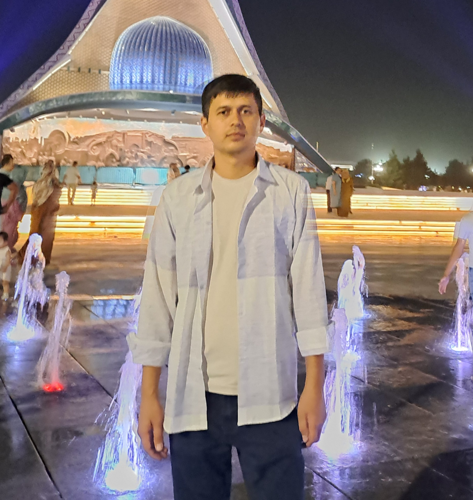

Suyunov Ixtiyor
Proyekt menejer
IT loyihalarni boshqarish
📞 +998 94 867 93 00
📲 Telegram
📷 Instagram
🌐 Bizning sayt
📱 NonBor barcha milliy taomlar
📱 NonBor biznes uchun
📱 FitMe o‘zingizga mosini tanlang